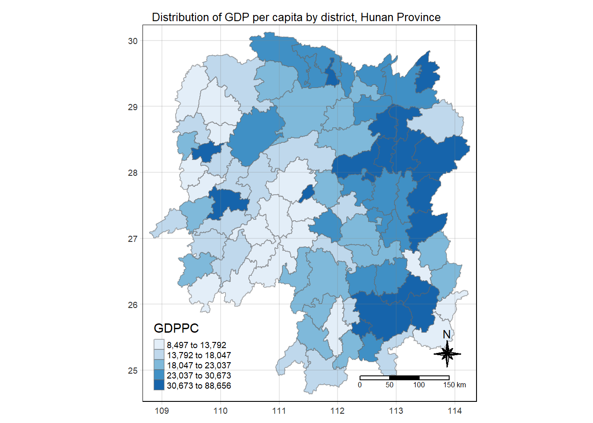

pacman::p_load(sf, sfdep, tmap, tidyverse, knitr)In-class Exercise 2: EHSA
Notes from Class
Spatial Randomness
- High chance they are not randomly distributed
- Where are the areas with higher concentration of activity (crime, electricity consumption)
- What contributes to the difference –> spatial inequality
Spatial Context
- Spatial weights: help to define/understand spatial context
- neighbour = 1; not neighbour = 0
- Types:
- adjacent: use geog area (next to each other)
- lagged: used to see when the neighbour effect subsides
- lagged 2 = 2nd degree
- lagged: used to see when the neighbour effect subsides
- distance: within a threshold distance
- inverse distance: nearest distance = higher weightage
- For example
- real-world phenomena of neighbours who do not share same boundary eg islands
- for take home exercise, distance should be better. With hexagon, we can make sure each area is equal and more precise to capture rather than using subzones.
- adjacent: use geog area (next to each other)
- Should exclude areas (eg central catchments) before running tests (eg Moran’s I)
- Use row-standardised weight
- Summary statistics
- Global = more mathematically informed
- Spatial dependency: used to interpolate (eg goldmine discovery)
- Spatial autocorrelation:
- Compare observed value vs its neighbour
- Trying to reject H0 of spatial randomness
- Signs of clustering vs dispersion
- Negative = checkerbox pattenrs
- Positive = clumps / cluster
- Should do Monte Carlo permutations for THE1!
- Spatial dependency: used to interpolate (eg goldmine discovery)
- Local
- Local Moran’s I
- Highlight both autocorrelation and where statistic test is significant
- Could also have autocorrelation bc not enough neighbours
- Could be applied to distance and proximity
- Gi’s statistics
- Only distance-based
- Gi = doesnt count itself
- G*i = takes itself into consideration (Moran’s I and Geary’s C uses this)
- Local Moran’s I
- Global = more mathematically informed
- Emerging hotpot
- Usually used for time-series data
- Mann-Kendall test: statistical, non-spatial
- if value at time k > time j (reference value)
- EHSA: replaces x with G*i
- cube = 1. time, 2. passengers, 3. location
1 Overview
1.1 Background
1.2 Objectives
2 Getting Started
- sf: does buffer, count polygons
- sfdep: create spacetime cube, and EHSA
- tmap: create thematic maps
- tidyverse: to conform to tiddle dataframe format; incl. readr to import text file into r, readxl, dplyr, ggplot2 etc
- knitr: create html tables
The Data
Two data sets will be used in this hands-on exercise, they are:
- Geospatial: Hunan in ESRI shapefile format.
- Aspatial: Hunan_2012.csv.
Import Data
hunan <- st_read(dsn = "data/geospatial",
layer = "Hunan")Reading layer `Hunan' from data source
`C:\kytjy\ISSS624\In-class_Ex\In-class_Ex2\data\geospatial'
using driver `ESRI Shapefile'
Simple feature collection with 88 features and 7 fields
Geometry type: POLYGON
Dimension: XY
Bounding box: xmin: 108.7831 ymin: 24.6342 xmax: 114.2544 ymax: 30.12812
Geodetic CRS: WGS 84- tibblr df, each observation represents 1 geographical area as it has geometry that allows you to plot polygon feature
- each record is a simple feature (sf) if it has geometry data
hunan2012 <- read_csv("data/aspatial/Hunan_2012.csv")- non-spatial data
- typical tibblr data frame
- In order to retain the geospatial properties, the left dataframe must be the sf data.frame (ie hunan)
- If reversed, geometry will be dropped
- This left_join is from dplyr, rather than from Base R
hunan <- left_join(hunan,hunan2012)%>%
select(1:4, 7, 15)basemap <- tm_shape(hunan) +
tm_polygons() +
tm_text("NAME_3", size=0.3)
gdppc <- qtm(hunan, "GDPPC")
tmap_arrange(basemap, gdppc, asp=1, ncol=2)